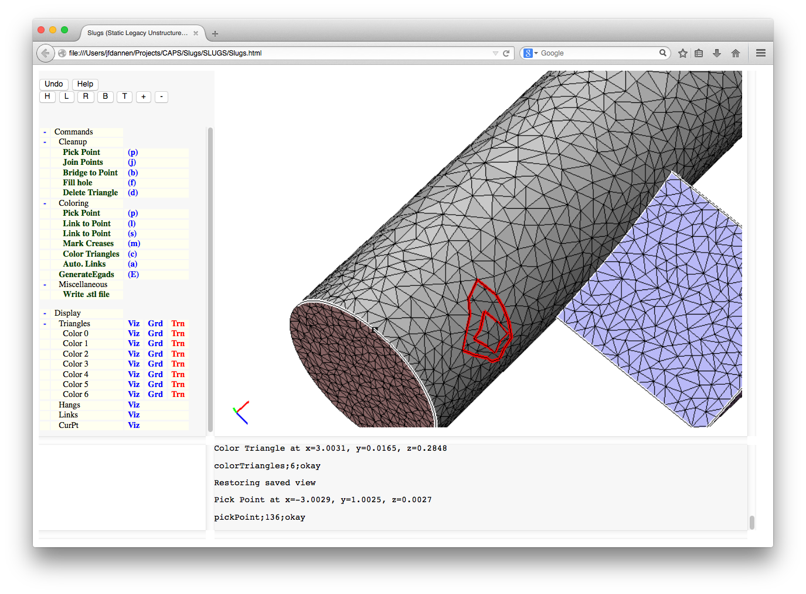
Notice that this is not the intended path, so press
the Doing so advances the "point" to the last location
chosen. Now finish this operation (and the similar ones on
the bottom of the cylinder).
7.0 Bug Reports and Other Feedback
SLUGS is a computer-based system for converting a
cloud of points into a static Boundary Representation (BRep).
The SLUGS program is built using a client-server
architecture.
The server consists of a back-end program (Slugs)
that performs the majority of the computational work; the
server has been designed to work on a variety of compute
platforms, including UNIX, LINUX, OSX, and Windows. As will be
described below, the user of SLUGS typically
starts a session by starting the server.
The client, which is built within a web browser, provides the graphical user interface with which most users will provide inputs and receive outputs. The supported browsers include recent versions of FireFox, Google Chrome, and Safari. (Internet Explorer is not supported because of a bug within the WebSockets layer provided by the browser).
The input file to SLUGS is a stereo-lithography
file (.stl). The triangles in the .stl
do not need to represent a watertight solid;
the .stl file can include (partially) unconnected
triangles.
The output of SLUGS is a .egads BRep
file, that consists of Faces that are either:
SLUGS involves the design
of the BRep that meets the above requirements.
The output BRep is considered to be "static" in that it
represents a Body that is not parameterized; that is, the output
BRep can be used as a fixed Body that can be "imported" into
the ESP system, but it cannot be parametrically
modified.
The user of SLUGS performs the transformation from
the .stl file to the .egads file using
the following steps:
SLUGS
automatically colors all triangles that are adjacent to the
chosen triangle (but not across a "link").The following tutorial has been designed to walk a
new SLUGS user through the basic capabilities that
are available through the user interface.
This tutorial will help you understand the use of
SLUGS. Details about the Command
Line and cursor and keyboard options
are contained in sections that follow this tutorial.
The tutorial starts with a pre-made part that is defined by the
file tutorial1.stl.
To start SLUGS there are two steps: (1) start the
"server" and (2) start the "browser". This can be done in a
variety of ways, but the two most common follow.
Technique 1: issue the two commands:
setenv SLUGS_START "open -a /Applications/Firefox.app ../SLUGS/Slugs.html"
Slugs ../data/Slugs/tutorial1
if using a c-shell; make appropriate changes for your shell
and/or operating system.
The first of these tells Slugs to open FireFox on
the file ../SLUGS/Slugs.html
when Slugs has generated a graphical
representation of the configuration. The second of these
actually starts the Slugs server. As long as the
browser stays connected
to Slugs, Slugs will stay alive and
handle requests sent to it from the browser. Once the last
browser that is connected to Slugs
exits, Slugs will shut down.
Technique 2: issue the command:
Slugs ../data/Slugs/tutorial1
Once the server starts, start a browser (for example, FireFox)
and open the page SLUGS/Slugs.html. As
above, Slugs will stay alive as long as there
is a browser attached to it.
Note that the default "port" used by Slugs is
7681. One can change the port in the call
to Slugs with a command such as:
Slugs ../data/Slugs/tutorial1 -port 7788
Once the browser starts, you will be prompted for a "hostname:port" as in:
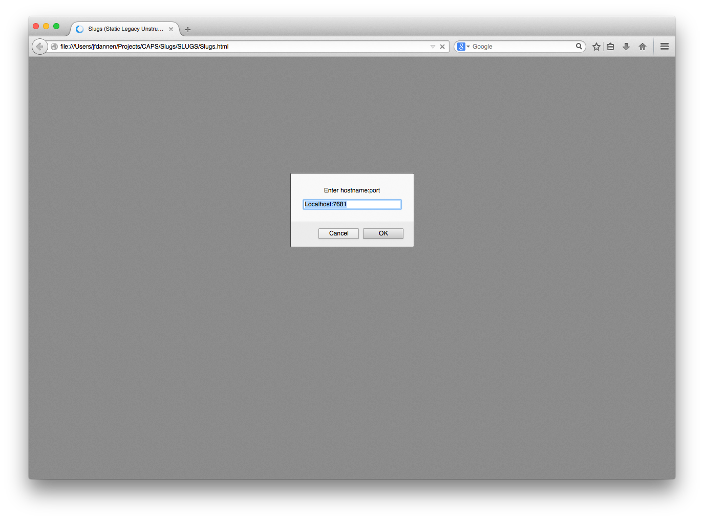
Most of the time, the "hostname" will be "Localhost" (meaning
that Slugs and the browser are on the same
computer). It is possible to attach to Slugs that
is running on another computer by giving an appropriate
"hostname".
As mentioned above, it is possible to change the "port" with a
command line argument when starting Slugs; if
that is done, then the alternative "port" must be included in
Slugs's prompt.
Once all the setup is done, the browser then presents the following 4 windows:
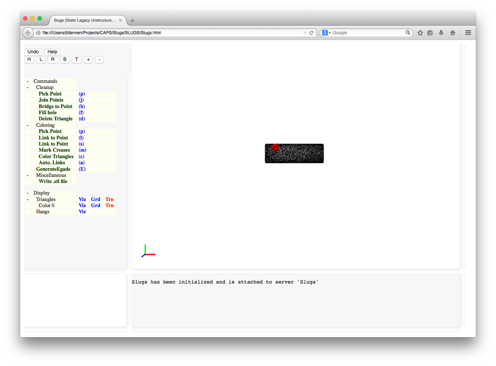
The window on the top left is called the "Tree" window. At the top of this window is a series of buttons. Below that is a listing of the available commands. It also contains the controls for the "Graphics" window.
The window on the top right is called the "Graphics" window, which contains a graphical representation of the current configuration, in three dimensions.
The window on the bottom left is the "Key" window. It is currently blank and will be used in future versions.
The window on the bottom right is called the "Messages" window.
It contains the messages that Slugs posts for the
user.
The first thing to do is to play with the image in the "Graphics" window. This is done with the mouse in the following ways:
When using the mouse, it is possible to enter "flying mode", in which the view continually changes until the mouse button is released. Flying mode is particularly useful when one needs to translate a long distance. Toggling flying mode is done by pressing the "!" key in the "Graphics" window.
At any time, a user might want to "save" a view for later use in the browser session. This is done by pressing the ">" key in the "Graphics" window; the "saved" view can be retrieved by pressing the "<" key.
The default (home) view can be obtained by pressing either "<Home>", "<Ctrl-h>", "<Ctrl-f>", or the "H" button near the top of the "Tree" window. (The home view is one in which the x-coordinate increases from left to right and the y-coordinate increases from bottom to top.) One can also get the top view by pressing "<Ctrl-t>" or the "T" button, the bottom view by pressing "<Ctrl-b>" or the "B" button, the left side view by pressing "<Ctrl-l>" or the "L", or the right side view by pressing "<Ctrl-r>" or the "R" button.
The function of the arrow keys depends on whether "flying mode" is active or not. For example, if "flying mode" is not active (the default), pressing the "<Left>" key causes the object to rotate to the left by 30 degrees; if "flying mode" is active (because the "!" key was pressed), then pressing the "<Left>" key causes the object on the screen to translate to the left. If the "Shift" is held while the "<Left>" key is pressed, the increments are 5 degrees and the translations are also smaller.
The "<PgUp>" or "<Ctrl-i>" keys or the "+" button can be used to zoom in and the "<PgDn>" or "<Ctrl-o>" key or the "-" button can be used to zoom out. The behavior of these keys/buttons does not depend on the current "flying mode".
To re-center the image at a given point and simultaneously reset the point about which mouse rotations will occur, point to any location in the "Graphics" window and press "*"; the image will be re-centered and a message will be posted in the "Messages" window.
To determine the identity of any object in the "Graphics" window, simply put your cursor on the object and press "^"; a summary of the identified object is shown in the "Messages" window. (Note that if the cursor is not exactly over any object, the message will only be posted once the mouse passes over a graphic object.)
To determine the approximate coordinates of any location in the "Graphics" window, simply put your cursor on the location and press "@"; the approximate coordinates of the location are shown in the "Messages" window.
Lastly, to get help on the commands that are available in the "Graphics" window, press "?" and a short listing will be given in the "Messages" window.
The results of several of these commands is shown in:
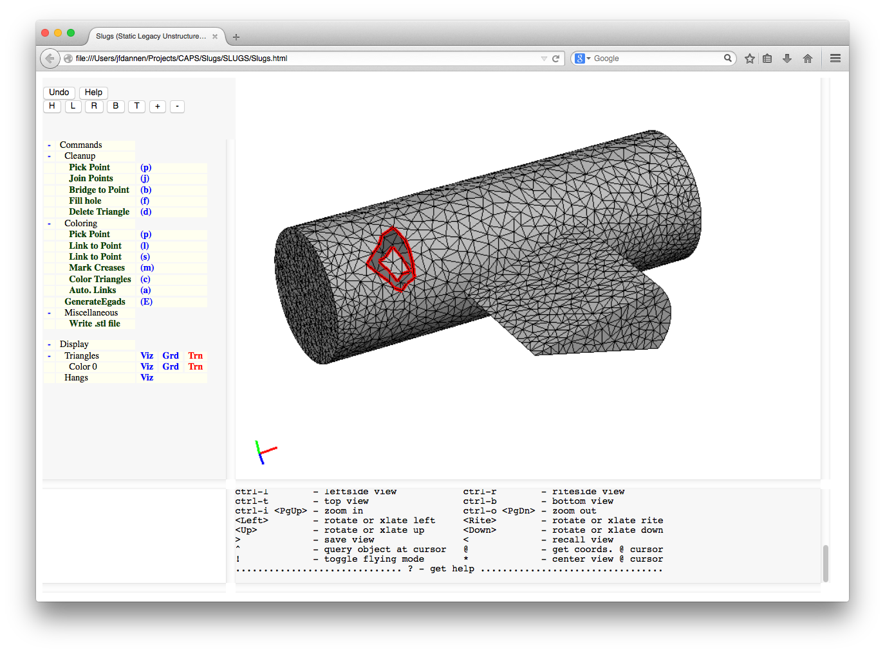
Now it is time to understand the "Tree" window. At the top of the "Tree" window there is a series of buttons:
Slugs HELP document (that you are now
reading)Below the buttons is a tree-like representation of the various commands. The tree can be collapsed; pressing the "+" at the beginning of any line expands (opens up) that particular entry in the tree; pressing the "-" at the beginning of any line collapses (closes) that particular entry.
Now look at the image in the "Graphics" window. It consists of
a series of triangles (from the .stl file).
Triangle sides that are not shared by exactly two triangles are
called "hanging sides" and are drawn with a red highlight.
As mentioned above, the hardest part of
using SLUGS is deciding how to break the
configuration into a combination of four-sided non-planar Faces
and arbitrary planar Faces. One such design for this case is
shown in:
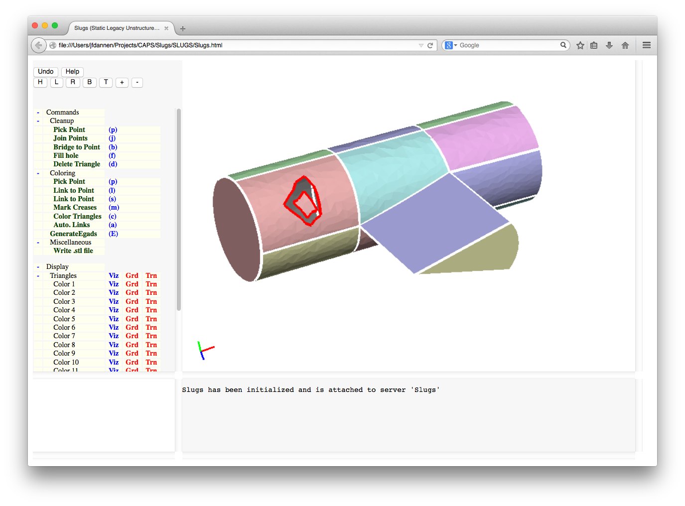
and
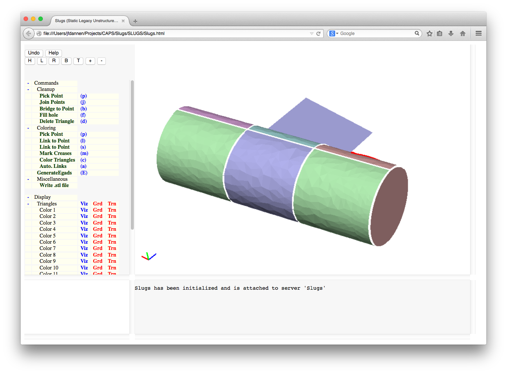
The easiest thing to do first is to break the triangles into
colors based upon "hard" sides, where a "hard" side is one whose
dihedral angle exceeds a user-specified value. In general, a
value of 45 degrees successfully identifies sides that at which
one would like to break the triangles into separate colors. The
user can execute this command by either pressing Mark
Creases in the Tree window or by pressing the
"m" key in the Graphics window; the user can
always determine the keyboard shortcut for any command by
looking at the blue entry in the Tree window. When you have
done this (with a minimum crease angle of 45),
links are created and are identified by white lines, as shown
in:
It now makes sense to "color" the triangles in each of the regions bounded by these links. So move the mouse over one of the triangles on the left end of the cylinder and press "c", which will give you the prompt:
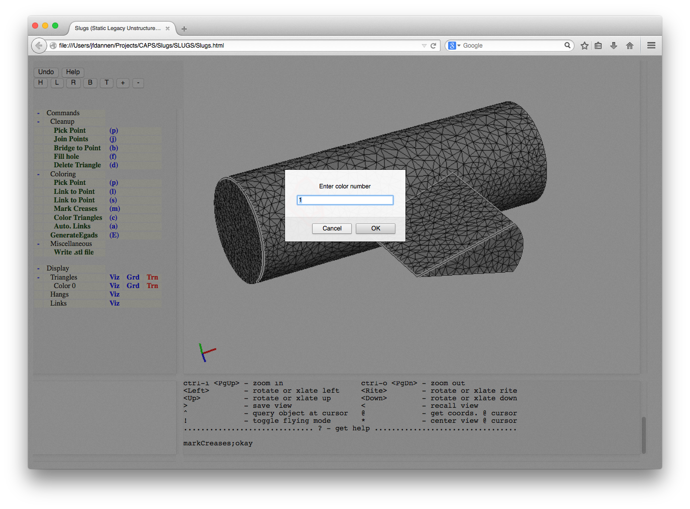
The suggested value for the color is the next available color. (Note that the triangles in the original configuration all had color "0" and so the next available color is "1"). When you have done this, your screen should look like:
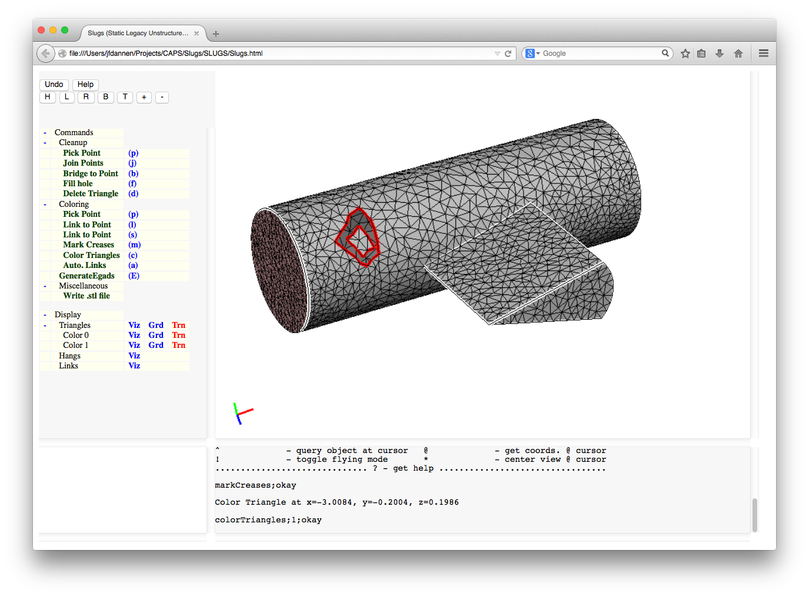
Continue to color the bottom of the triangular extrusion, the top of the extrusion, the right side of the extrusion, and the triangular tip of the extrusion. Then color the right-hand end of the cylinder, giving:
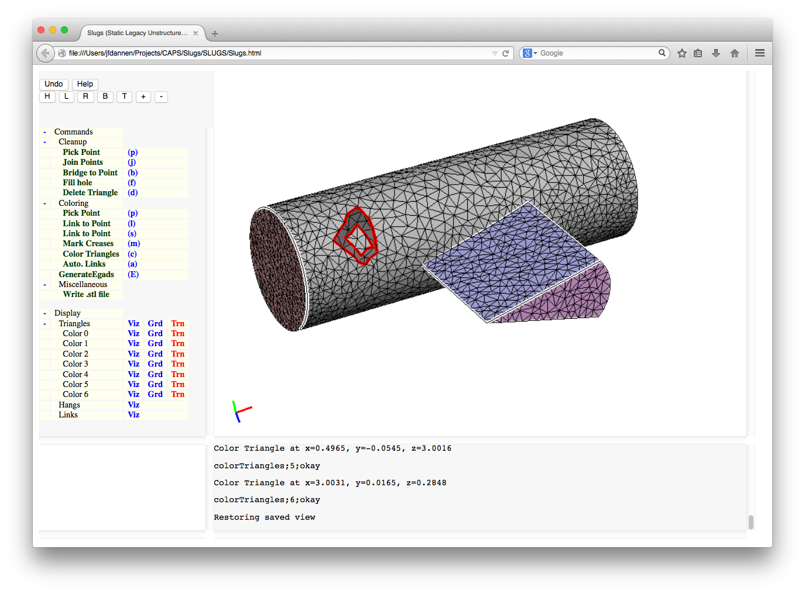
The next step is to color the cylinder's surface. Our design calls for the cylinder being broken into two halves. If you rotate the cylinder a bit, you will see that the original triangles were created so as to have a series of triangle sides that form a nice straight line between the two cylinder halves. In order to create "links" to separate these, you will do a two-step operation:
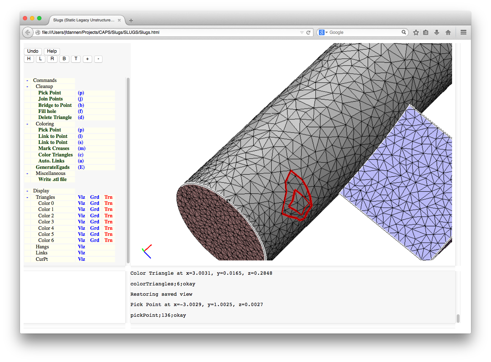
Notice that this is not the intended path, so press
the Doing so advances the "point" to the last location
chosen. Now finish this operation (and the similar ones on
the bottom of the cylinder).
Now try to color the two sides of the cylinder. This should give you something that looks like:
The only thing that we still need to worry about are the "floating triangles". If you put your mouse over one of the triangles on the side of the cylinder that is closest to you and press "^", you will see in the message window that those triangles have the color "7". To color the "floating triangles", put your mouse over one of them and press "c" and select color 7.
The next step is to break the cylinder side from which the protrusion grows into a series of 7 colors (so that each will be four-sided). This is done with a series of "scribe" operations. A "scribe" operation is similar to creating "links" above, except that the "scribe" breaks the triangles in a fairly straight line between the "point" and the scribe location.
Let's scribe the triangles in the region to the left of the sharp end of the protrusion. This is done by selecting a point along the left end of the cylinder with the "p" command and then pressing "s" at the point at the junction of the cylinder and the sharp edge of the protrusion, as in:
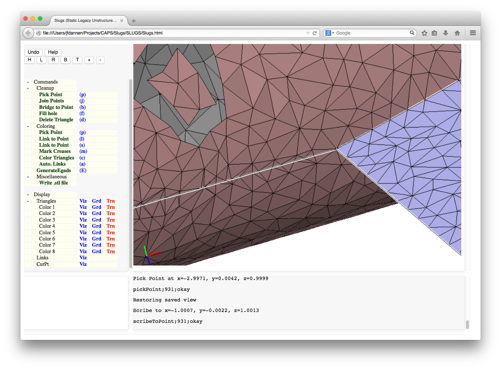
Continue to "scribe" the cylinder as shown in:
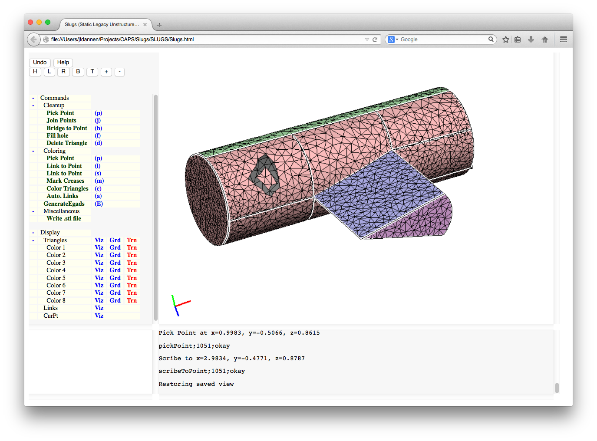
After the whole cylindrical surface has been scribed, the various portions can be colored using the "c" command, giving:
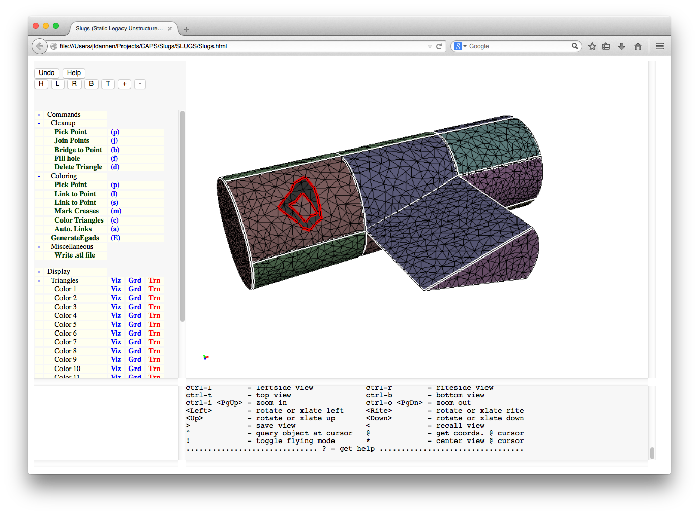
Note that two different "colors" may appear to be the same due
to the limited number of hues that SLUGS uses. If
you are not sure, use the "^" command to
determine the actual color numbers.
The only thing remaining is to separate the back side of the cylinder into three colors so that each "color" will be bounded by four Edges. Note that in "scribing" the back of the cylinder, it is generally good practice to make each scribe in two parts so that the "scribe" operation will operate on the back of the cylinder instead of on the front. (Note: the "scribe" operation works by first finding the shortest path, as is done by the "l" command, and then straightening it. Since the two sides of the cylinder are roughly the same side, it is equally likely that the "scribe" operation will operate on the front of the cylinder as it is that it operate on the back; by doing the "scribe" in two parts, one can enforce it to operate on the back.) The back of the cylinder looks like:
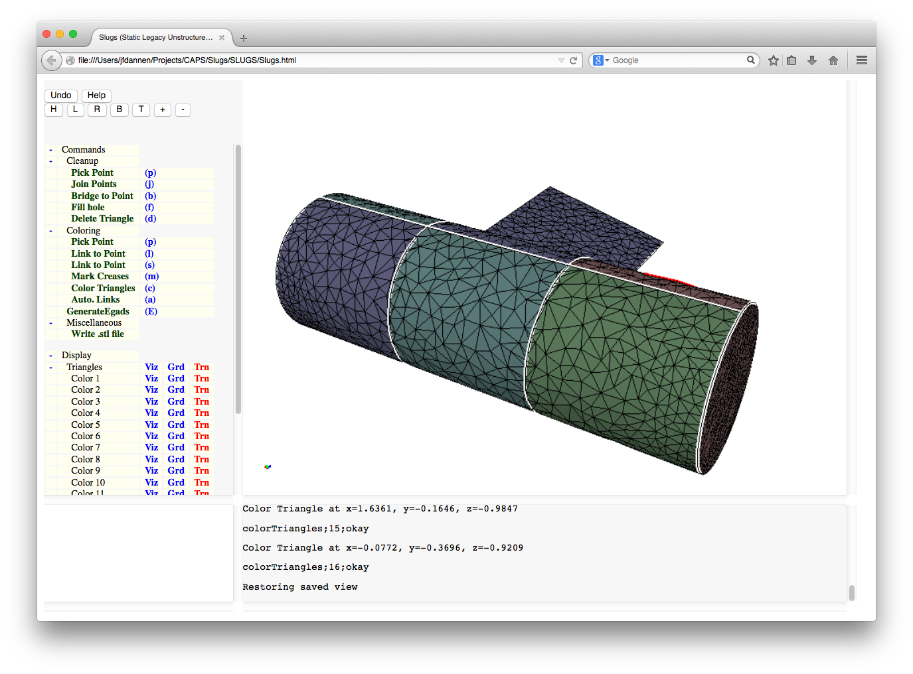
Note that all colors are either planar (the left and right
cylinder ends as well as the "tip" of the extrusion), or are
four-sided. If you have done this correctly, you should now be
able to select Generate EGADS in the Tree window
or press the "E" key in the Graphics window.
You will be prompted for the name of the .egads
file; for the tutorial,
use ../data/Slugs/tutorial1.egads You will then be
prompted for the number of control points to use along each
Edge. The more more control points that are used, the better the
fit between the .stl and .egads
representations. But also, the more control points that are
used, the higher liklihood that wiggles will be generated.
Experience has shown that the optimal value to use is either "5"
or "7". Since there are not very many points in the cloud,
choose "5" for this case.
If you have done everything successfully, you should get a screen such as:
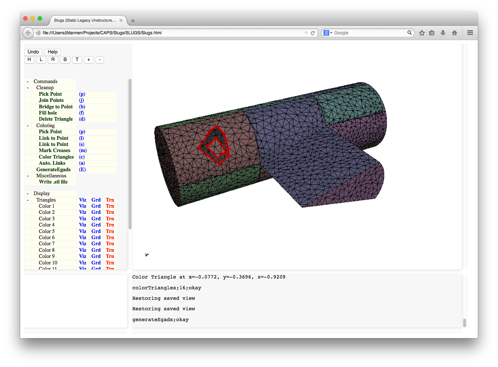
and you will get a "success" message in the Messages window.
If you have a problem, the Messages window will inform you of what was found. To isolate the problem, turn the Grid off on all Faces by pressing Grd to the right of "Triangles" in the Tree window and then pressing Grd to the right of the offending color. Generally by looking at the offending color, one can determine if the color is four-sided or planar; if not, break the color into one or more colors and then generating the EGADS file again.
All reports of possible 'bugs' and any other feedback should be e-mailed to 'jfdannen@syr.edu' or 'Haimes@mit.edu'. If a bug report, please include the version number you are running (listed in the title bar at the top of the program), what you were doing at the time of the bug, and what happened that you didn't expect. The more information that you include, the better the chances that the bug can be reproduced and hence fixed.
Copyright (C) 2013/2020 John F. Dannenhoffer, III (Syracuse University)
This library is free software; you can redistribute it and/or modify it under the terms of the GNU Lesser General Public License as published by the Free Software Foundation; either version 2.1 of the License, or (at your option) any later version.
This library is distributed in the hope that it will be useful, but WITHOUT ANY WARRANTY; without even the implied warranty of MERCHANTABILITY or FITNESS FOR A PARTICULAR PURPOSE. See the GNU Lesser General Public License for more details.
You should have received a copy of the GNU Lesser General Public License along with this library; if not, write to the Free Software Foundation, Inc., 51 Franklin Street, Fifth Floor, Boston, MA 02110-1301 USA